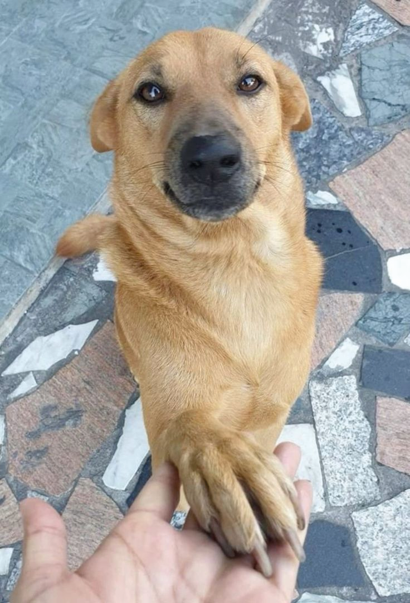
Toby
2 años
Mestizo
Busca padrino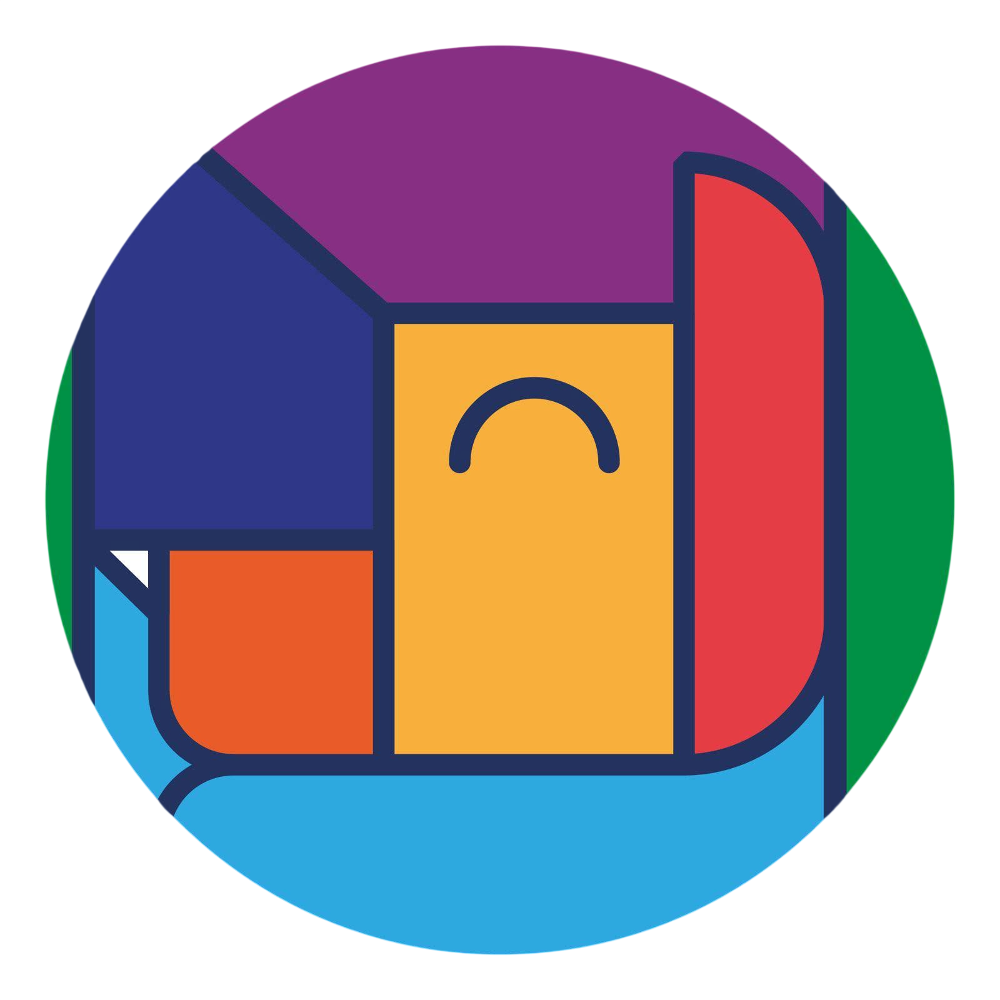
Padrinos de VidaPatitas Riobamba
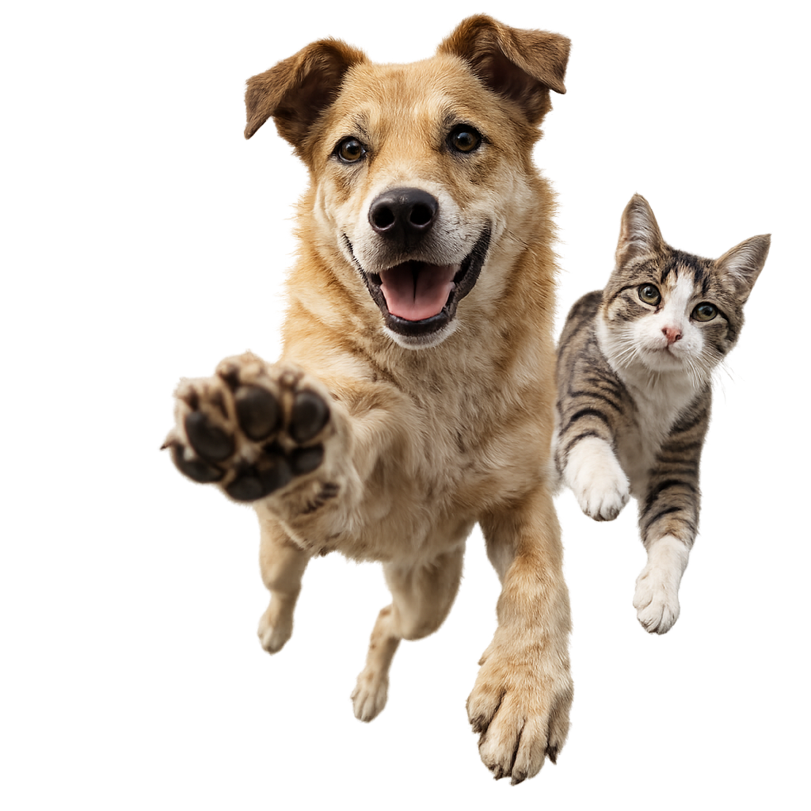
Conócelos

2 años
Mestizo
Busca padrino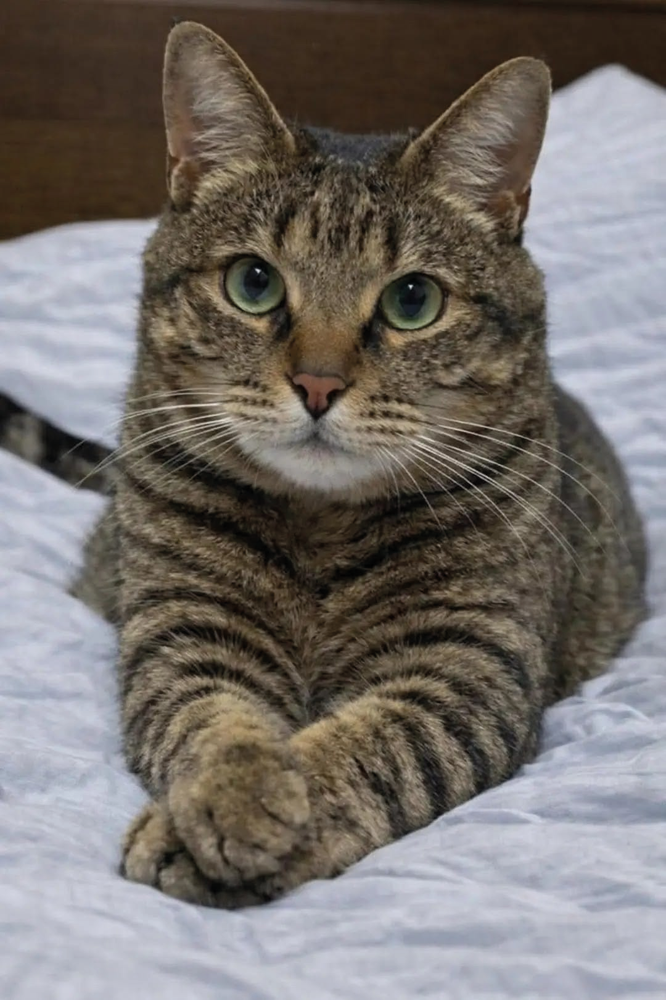
3 años
Mestiza
En recuperación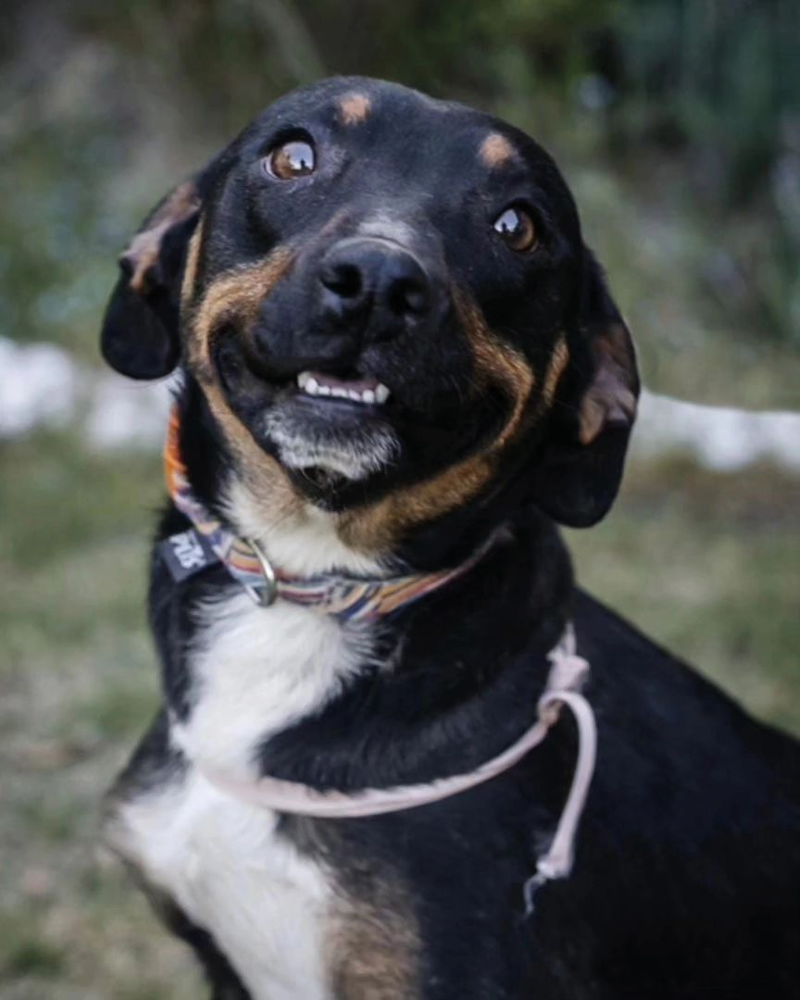
3 años
Mestizo
Busca padrino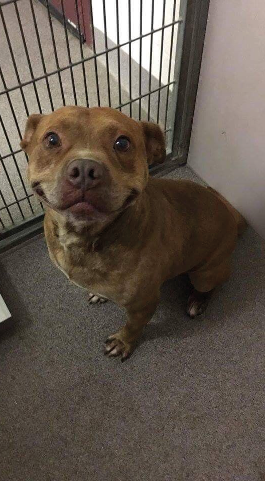
4 años
Pitbull mestizo
Busca padrino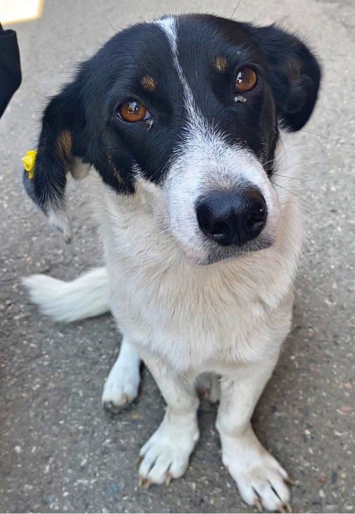
2 años
Mestiza
Busca padrino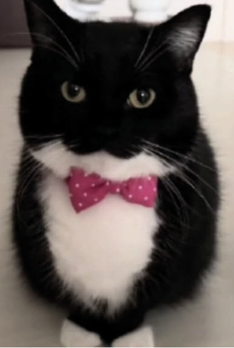
1 año
Mestizo
Busca padrino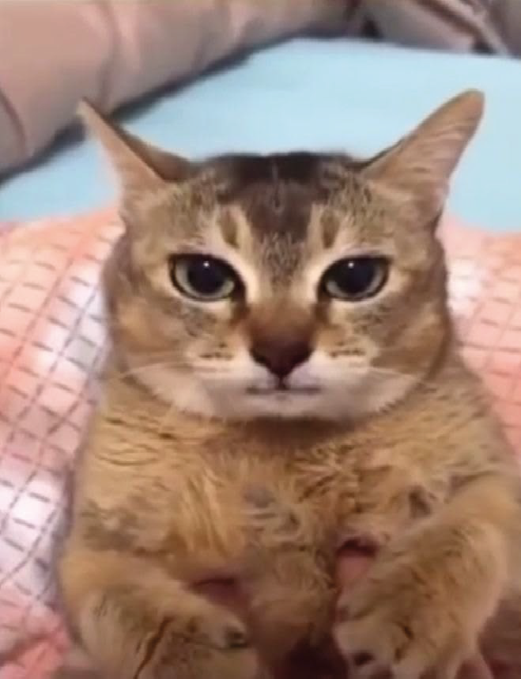
6 años
Mestiza
Busca padrino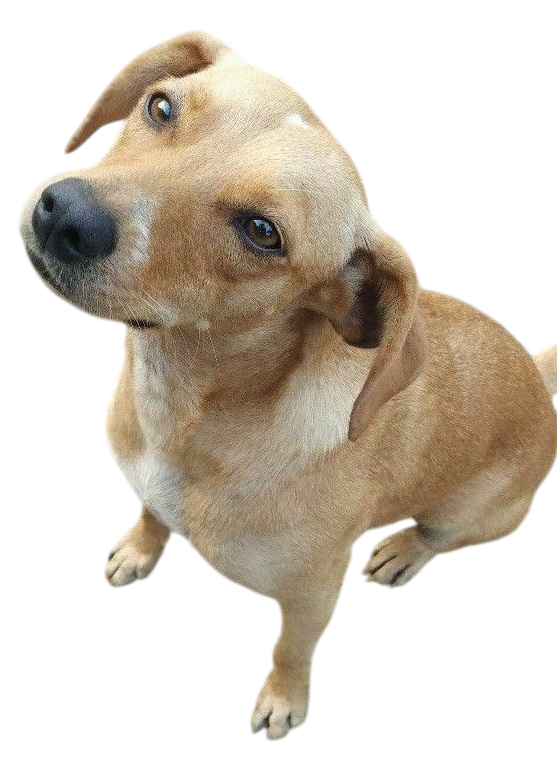
Gracias por su apoyo
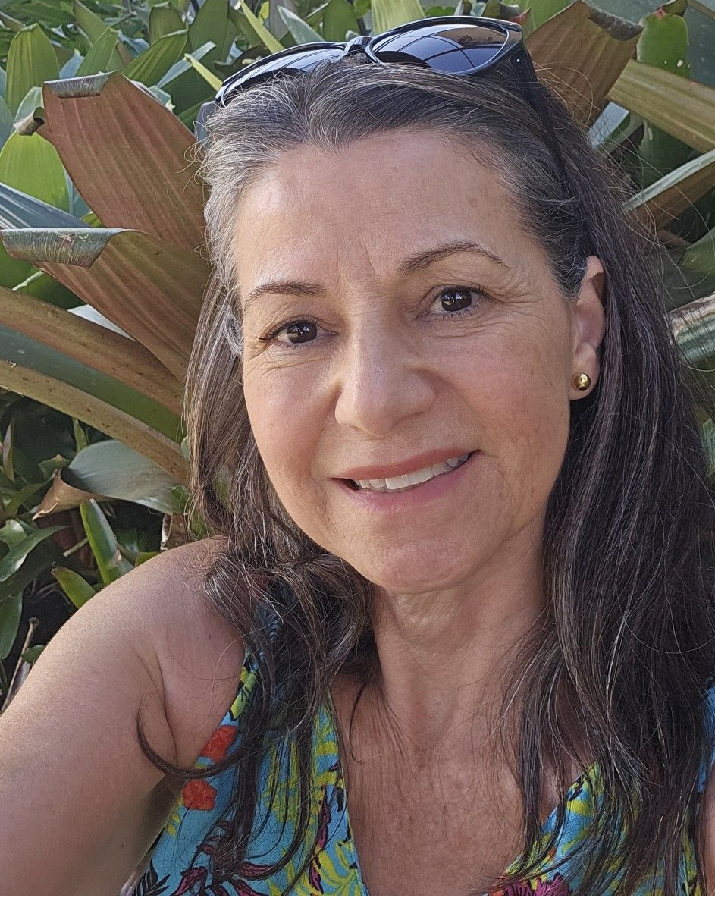
Madrina de Oro
3 animalitos apoyadosPadrino de Plata
2 animalitos apoyados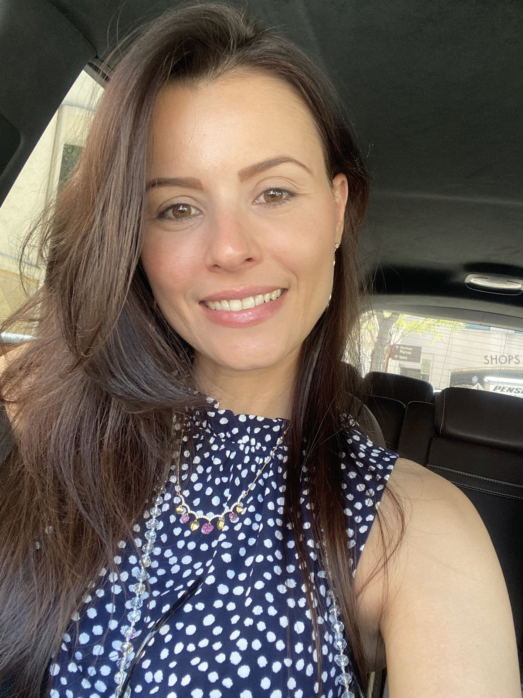
Madrina de Bronce
1 animalito apoyadoNuestra causa
Padrinos de Vida nace como una iniciativa del Centro de Bienestar Animal Patitas, ubicado en el Parque Ecológico de Riobamba.
Conectamos a la ciudadanía con perros y gatos rescatados que necesitan una segunda oportunidad, promoviendo el apadrinamiento y la adopción responsable.
Quiero ayudar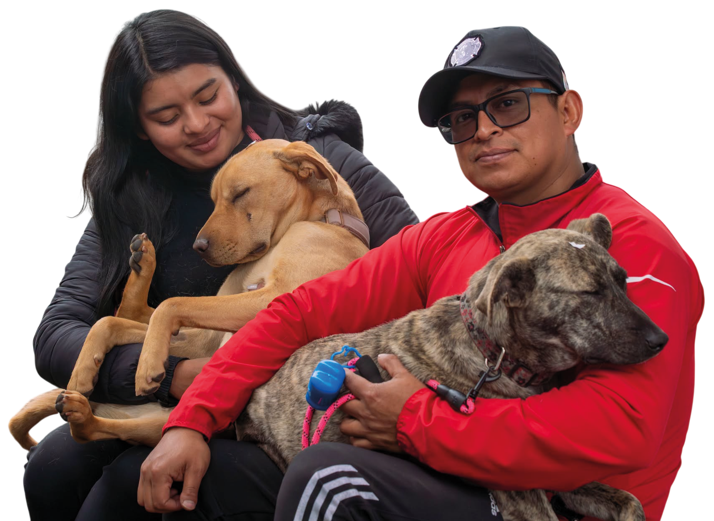